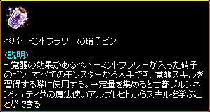
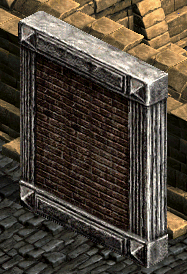
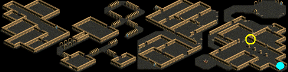

覚醒クエスト

・Lv300になると、特定のスキルが強化された「覚醒スキル」を使えるようになります。
・覚醒タイプは3つの中から１つを選択できます。
・各職業の覚醒タイプ/スキルの詳細は ⇒ 覚醒スキル
・スキル再配分巻物を使用するか、1～3次転生によりスキルが初期化されると、覚醒タイプも初期化されます。
・再振り後も古都ブルンネンシュティグのアルブレヒト（43.48）に話して再度、選択し直せます。
・覚醒スキルは既存のスキルをマスターすることでLv1まで上昇できます。(3500/7000SP必要)
・専用パッシブスキルは、ON/OFFの切り替えなしスキルレベル増加効果に依らずで常に効果が発揮されます。
・専用強化スキルと強化スキルは、スキルマスターや装備品などのスキルLv補正+が適応されます。
・2020/2まではギルド戦/攻城戦にて覚醒スキルは発動しませんでしたが、現在は使用可能。
・ペパーミントフラワーの硝子ビンは、自キャラ±50Lvのモンスターから0.1%程度の確率でドロップします。取引可。

| 覚醒スキル | SP | 硝子ビン | 条件 | 説明 | |
|---|---|---|---|---|---|
| 専用パッシブスキル | - | - | 自動取得 | 異なる覚醒タイプ は取得不可 |
新スキル |
| 専用強化スキル | 3500 | - | 前提スキルをマスター | 既存スキルの 強化スキル |
|
| 自分の覚醒タイプの 強化スキル |
3500 | 2個 | 前提スキルをマスター | 異なる覚醒タイプ でも取得可能 |
|
| 他の覚醒タイプの 強化スキル |
7000 | 4個 | 前提スキルをマスター、 専用強化スキルと自分の覚醒タイプの強化スキル2つを取得 |
||
例） エンターテイナーに覚醒する場合
・「ウルトラノヴァ」をマスターするとエンターテイナーに覚醒でき、クエスト完了時に専用パッシブスキル「華麗なる変身」を自動で取得。
・SP3500で、「ウルトラノヴァ」の専用強化スキル「ウルトラスーパーノヴァ」を取得。
・SP3500と硝子ビン2個と「花の乙女スペシャル」をマスターで、強化スキル「花の乙女デラックス」を取得。
・SP3500と硝子ビン2個と「ライトニングワインダー」をマスターで、強化スキル「サンダーボルトワインダー」を取得。
「ウルトラスーパーノヴァ」、「花の乙女デラックス」、「サンダーボルトワインダー」はどれから習得しても可。
自分の覚醒タイプの覚醒スキルを4つ全て取得すると、他の覚醒タイプの強化スキルも取得可能になる。
・SP7000と硝子ビン4個と各前提スキルをマスターで、他の覚醒タイプの強化スキルである
「ビックコメットシューティング」、「アステラガン」、「ミスティックボックス」、「平和の伝書鳩」を取得。
「スターライトパレード」、「ギャラクシーシャワー」、「平和の歌」、「スーパーアイドルスター」や、
プリンセスの覚醒スキルは覚醒タイプが異なるため、取得不可。
| 黄色のメリックが残した遺物 1 | |||||||||||||||||||||||||||||||||||||||||||||||||||||||||||||||||||||||||
|---|---|---|---|---|---|---|---|---|---|---|---|---|---|---|---|---|---|---|---|---|---|---|---|---|---|---|---|---|---|---|---|---|---|---|---|---|---|---|---|---|---|---|---|---|---|---|---|---|---|---|---|---|---|---|---|---|---|---|---|---|---|---|---|---|---|---|---|---|---|---|---|---|---|
ダメル地下遺跡から石版を発掘したシュトラウズを探してみよう。シュトラウズは東側の遺跡入口あたりで落ちこんでいるらしい。 シュトラウズが発掘したという石版は地下遺跡の中にある。なにか発見できるかもしれない。ダメル地下遺跡に入って石版を探そう。 石版は見つかったが、保存状態が悪い。表面には不思議な文字で何やら文章が刻まれている。読むのは難しそうだ。再びシュトラウズに会って石版について話してみよう。 石版に刻まれた文章については、シュトラウズも分からないという。文章を解読したいと言ったら、シュトラウズは拓本の紙をくれた。オクレルなら解読できる人を知っているかもしれないという。 オクレルは、魔法都市スマグのウィザードギルドの近くにいるスタイングという魔法師に聞いてみろと言った。 スタイングは、どこか不思議な雰囲気の老魔法師だった。解読のための時間が欲しいと言ってるので、しばらくスマグ観光でもしてからスタイングの所へ戻ろう。 |
|||||||||||||||||||||||||||||||||||||||||||||||||||||||||||||||||||||||||
| 受諾場所 | 荒廃都市ダメル オクレル（29.41） | ||||||||||||||||||||||||||||||||||||||||||||||||||||||||||||||||||||||||
| 受諾条件 | Lv300 キャンセル不可 | ||||||||||||||||||||||||||||||||||||||||||||||||||||||||||||||||||||||||
| 報酬 | - | ||||||||||||||||||||||||||||||||||||||||||||||||||||||||||||||||||||||||
| 荒廃都市ダメル | シュトラウズ（66.24）へ | ||||||||||||||||||||||||||||||||||||||||||||||||||||||||||||||||||||||||
| ダメル地下遺跡 | 石版（172.55）をクリック   |
||||||||||||||||||||||||||||||||||||||||||||||||||||||||||||||||||||||||
| 荒廃都市ダメル | シュトラウズへ オクレルへ |
||||||||||||||||||||||||||||||||||||||||||||||||||||||||||||||||||||||||
| 魔法都市スマグ | スタイング（6.47）へ スタイングへ |
||||||||||||||||||||||||||||||||||||||||||||||||||||||||||||||||||||||||
| 黄色のメリックが残した遺物 2 | |||||||||||||||||||||||||||||||||||||||||||||||||||||||||||||||||||||||||
錬金術師ブロデルを探し、完全な石版を持ってくる方法を聞いてみよう。ブロデルはアラク湖の近くで錬金術の研究をしている。 ひびが入った石版をくっつけるための接着剤を作ろう。そのためにはネバネバした蜘蛛の糸が5つ必要だ。ホールドスパイダ、ソードスパイダーを退治すると入手できる。 ネバネバした蜘蛛の糸を5つ全て集めた。ブロデルの所に戻ろう。 石版をくっつけることができる強力接着剤をもらった。荒廃都市ダメルに行って石版を持ってこよう。その前にシュトラウズから許可をもらわなければならない。 シュトラウズは自由に石版を持って行っても問題ないという。石版を取りにダメル地下遺跡に入ろう。 魔法にかかった石版を無事手に入れた。魔法都市スマグのスタイングの所に戻ろう。 |
|||||||||||||||||||||||||||||||||||||||||||||||||||||||||||||||||||||||||
| 受諾場所 | 魔法都市スマグ スタイング（6.47） | ||||||||||||||||||||||||||||||||||||||||||||||||||||||||||||||||||||||||
| 受諾条件 | Lv300 キャンセル不可 | ||||||||||||||||||||||||||||||||||||||||||||||||||||||||||||||||||||||||
| 報酬 | - | ||||||||||||||||||||||||||||||||||||||||||||||||||||||||||||||||||||||||
| ヘムクロス高原 / アラク湖付近 | ブロデル（120.65）へ | ||||||||||||||||||||||||||||||||||||||||||||||||||||||||||||||||||||||||
| スウェブタワー １Ｆ | ホールドスパイダ（Lv205）、ソードスパイダー（Lv205）を5匹倒す | ||||||||||||||||||||||||||||||||||||||||||||||||||||||||||||||||||||||||
| ヘムクロス高原 / アラク湖付近 | ブロデルへ | ||||||||||||||||||||||||||||||||||||||||||||||||||||||||||||||||||||||||
| 荒廃都市ダメル | シュトラウズ（66.24）へ | ||||||||||||||||||||||||||||||||||||||||||||||||||||||||||||||||||||||||
| ダメル地下遺跡 | 石版（172.55）をクリック | ||||||||||||||||||||||||||||||||||||||||||||||||||||||||||||||||||||||||
| 魔法都市スマグ | スタイングへ | ||||||||||||||||||||||||||||||||||||||||||||||||||||||||||||||||||||||||
| 黄色のメリックが残した遺物 3 | |||||||||||||||||||||||||||||||||||||||||||||||||||||||||||||||||||||||||
石版の文章を解読するために、学者ヘンリエットに解読されてない拓本を見せ、助けてもらおう。ヘンリエットは、古都ブルンネンシュティグにある国会議事堂の近くにいる。 ヘンリエットから黄色のメリックに関する話を聞いた。ヘンリエットが解読を終えるまでは時間がかかりそうだ。再び魔法都市スマグに行ってスタイングと話してみよう。 黄色のメリックについて詳しく調べるため、研究家ディラを探しに行こう。ディラは、スマグ地下道で問題を起こしているレッドアイ残党を相手にしているらしい。 ディラは、レッドアイ残党を相手するのに忙しくて話をする余裕がない。周りのレッドアイ信奉者を片付けたら話ができそうだ。 レッドアイ信奉者をある程度退治した。今回こそディラと話ができそうだ。ディラの所へ戻ろう。 ディラは、黄色のメリックが地下界への門を開いた理由について話してくれた。ある程度時間も経ったので、スタイングの所に戻って石版の解読が終わったか聞いてみよう。 |
|||||||||||||||||||||||||||||||||||||||||||||||||||||||||||||||||||||||||
| 受諾場所 | 魔法都市スマグ スタイング（6.47） | ||||||||||||||||||||||||||||||||||||||||||||||||||||||||||||||||||||||||
| 受諾条件 | Lv300 キャンセル不可 | ||||||||||||||||||||||||||||||||||||||||||||||||||||||||||||||||||||||||
| 報酬 | 帰還の巻物1個 | ||||||||||||||||||||||||||||||||||||||||||||||||||||||||||||||||||||||||
| 古都ブルンネンシュティグ | ヘンリエット（126.103）へ | ||||||||||||||||||||||||||||||||||||||||||||||||||||||||||||||||||||||||
| 魔法都市スマグ | スタイングへ | ||||||||||||||||||||||||||||||||||||||||||||||||||||||||||||||||||||||||
| スマグ地下道 Ｂ１ |
ディラ（67.32）へ レッドアイ信奉者（Lv50）を5匹倒す ディラへ |
||||||||||||||||||||||||||||||||||||||||||||||||||||||||||||||||||||||||
| 魔法都市スマグ | スタイングへ | ||||||||||||||||||||||||||||||||||||||||||||||||||||||||||||||||||||||||
| 黄色のメリックが残した遺物 4 | |||||||||||||||||||||||||||||||||||||||||||||||||||||||||||||||||||||||||
石版の解読が全て終わっていた。古都ブルンネンシュティグの学者ヘンリエットから解読本をもらって来よう。ヘンリエットは、古都ブルンネンシュティグにある国会の建物近くにいる。 ヘンリエットから解読本をもらった。これで石版の文章を読むことができる。魔法都市スマグに行ってスタイングと一緒に見よう。 石版の魔法を使うためには、覚醒の霊水が必要のようだ。問題はどうやって作るのか分からないことだ。ヘムクロス高原 / アラク湖付近の錬金術師ブロデルに聞いてみよう。 ブロデルは、ティンバーマンが覚醒の霊水を壺ごと飲み込んでしまったという。ティンバーマンを退治し覚醒の霊水を取り戻そう。 覚醒の霊水を取り戻した。ヘムクロス高原 / アラク湖付近のブロデルの所へ戻ろう。 ブロデルから覚醒の霊水をもらって、石版の魔法が使えるようになった。魔法都市スマグで待っているスタイングの所へ戻ろう。 |
|||||||||||||||||||||||||||||||||||||||||||||||||||||||||||||||||||||||||
| 受諾場所 | 魔法都市スマグ スタイング（6.47） | ||||||||||||||||||||||||||||||||||||||||||||||||||||||||||||||||||||||||
| 受諾条件 | Lv300 キャンセル不可 | ||||||||||||||||||||||||||||||||||||||||||||||||||||||||||||||||||||||||
| 報酬 | - | ||||||||||||||||||||||||||||||||||||||||||||||||||||||||||||||||||||||||
| 古都ブルンネンシュティグ | ヘンリエット（126.103）へ | ||||||||||||||||||||||||||||||||||||||||||||||||||||||||||||||||||||||||
| 魔法都市スマグ | スタイングへ | ||||||||||||||||||||||||||||||||||||||||||||||||||||||||||||||||||||||||
| ヘムクロス高原 / アラク湖付近 | ブロデル（120.65）へ ティンバーマン（Lv125）を倒す ブロデルへ |
||||||||||||||||||||||||||||||||||||||||||||||||||||||||||||||||||||||||
| 魔法都市スマグ | スタイングへ | ||||||||||||||||||||||||||||||||||||||||||||||||||||||||||||||||||||||||
| 黄色のメリックが残した遺物 5 | |||||||||||||||||||||||||||||||||||||||||||||||||||||||||||||||||||||||||
石版の魔法を使うためには相当な魔力が必要になるようだ。古都ブルンネンシュティグに行って、魔法師アルブレヒトに会ってみよう。 アルブレヒトと黄色のメリックに関する話を交わした。ペパーミントフラワーの小ビンを1つ入手しよう。ペパーミントフラワーの小ビンは、土蜘蛛から手に入る。 ペパーミントフラワーの小ビンを1つ入手した。古都ブルンネンシュティグの魔法師アルブレヒトの所に戻り、石版の魔法をお願いしよう。 |
|||||||||||||||||||||||||||||||||||||||||||||||||||||||||||||||||||||||||
| 受諾場所 | 魔法都市スマグ スタイング（6.47） | ||||||||||||||||||||||||||||||||||||||||||||||||||||||||||||||||||||||||
| 受諾条件 | Lv300 キャンセル不可 | ||||||||||||||||||||||||||||||||||||||||||||||||||||||||||||||||||||||||
| 報酬 | 覚醒 | ||||||||||||||||||||||||||||||||||||||||||||||||||||||||||||||||||||||||
| 古都ブルンネンシュティグ | アルブレヒト（42.48）へ | ||||||||||||||||||||||||||||||||||||||||||||||||||||||||||||||||||||||||
| 東プラトン街道 / イースタンブリッジ付近 | 土蜘蛛（Lv1）を倒す | ||||||||||||||||||||||||||||||||||||||||||||||||||||||||||||||||||||||||
| 古都ブルンネンシュティグ | アルブレヒトまたはイルデレヒト（41.49）へ、覚醒タイプを選択 専用強化スキルの前提スキルをマスターしていないと、覚醒不可。
アルブレヒトまたはイルデレヒトへ、強化したいスキルを選択 (1)私の才能の強化スキルを手に入れたいです。 (2)違う才能の強化スキルを手に入れたいです。 |
||||||||||||||||||||||||||||||||||||||||||||||||||||||||||||||||||||||||